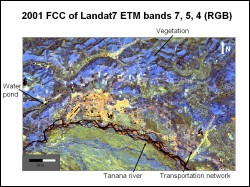
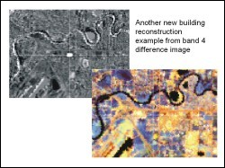

GEOS 422 - Fall 2002 student projects
Land use and change detection in Fairbanks area, Alaska, using Landsat images (Yiming Wang)

Landsat Thematic Mapper (TM) data from June 15, 1986 and Enhanced Thematic Mapper plus (ETM+) data from June 16, 2001 for the Fairbanks and surrounding area were used to study the landuse pattern and to detect changes that occurred during these 15 years. Additionally, socio-economic data from the Fairbanks North Star borough community research database, and the aerial photographs of Fairbanks area published by AreoMap, US, 2001, were used for integrated interpretation.

Following were the main results and broad conclusions of the study:
- Using remote sensing techniques, a variety of land-use classes were identified in Fairbanks area. These are dense vegetation, sparse vegetation, settlements, water bodies with large amount of sediments, clear water bodies, barren areas and transportation network.
- Useful enhancement techniques useful for land-use studies include: False Color Compositing (FCC of bands 4, 3, 2, bands 7, 5, 4, and bands 3, 5, 4), super- classification, image ratioing (NDVI image), image differencing and image coding.
- In the last 15 years, the city of Fairbanks has expanded to north and west. Settlements have expanded. New house construction tend migrate to outside of the city center. The vegetation has recovered in the old closed gold mining area. New gold mining activities still grow in some areas.
- Landsat images are very useful for vegetation detection and newly open mining area, and it is still useful for new houses detection, but the spatial resolution is not very high.
- A color display that involved thresholding, density-slicing color-coding and IHS transformation would be also useful for the future study of the land-use change detection.
Supervisor:
Anupma Prakash, Geology and Geophysics, UAF